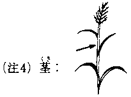

（1）
独立
問1 広場は独立への希望に燃えた人々であふれていた。
問2 土地を耕し、種をまき、草をとり、虫や病気から作物を守り、そしてやっと実りの秋をむかえる。
問3 混乱した気持ちを静めるために、肩の力を抜き、目を閉じて、ゆっくりと呼吸してみた。
問4 首相は状況の変化を認めようとしなかった。
問5 この地方は、雨量が少なく湿度が低い。
問1 xやy、＋や－などの符号をもちいてしきをつくり、けいさんして問題をとく。
問2 銀行や商店にはぼうはんカメラなどのそうちがふきゅうし、とうなんをふせぐのに役立っている。
問3 テニスのあいてをしてくれるように弟にたのんでみたが、つかれているからとことわられた。
問4 会社のけいえいにしっぱいした彼は、しゃっきんをかえすために家を売らなければならなくなった。
問5 グラフの太いきょくせんは、こむぎのゆにゅうりょうの5年間の変化をしめしている。
私が半年ほど入院した、同じ病室に、完全に寝たきり（注1）になっていたKさんという人がいました。彼の毎日の楽しみは、看護婦さんに「息子（注2）から電話があったでしょうか」と尋ね、「あったわよ」と言う看護婦さんの返事を聞くことでした。当初、私は、オヤジ（注3）の病状を毎日のように電話で尋ねてくるいい息子さんだなぁーと感心しながら、Kさんと看護婦さんのやりとりを、ベッドの上で眺めていました。
ところが、それがうそであることが、しばらくして分かりました。息子さんからの電話はなく、看護婦さん達が、かかってきたかのように演じていたのです。それはKさんを励まし、希望をもたせるために、看護婦さん達がついた精いっぱいのやさしいうそでした。そして、悲しいうそでした。というのは、Kさんが入院した当初は、本当にその息子さんから毎日のように病院に電話があったそうです。トラックの運転手をしていた彼は、仕事で全国を走り回っていたため、直接、病院に見舞いに来られなかったのです。入院して以来、Kさんは何度か危険な状態になったことがあったそうです。そのたびに、看護婦さんが、「息子さんから電話がかかっているのよ」と声をかけると、不思議ともち直したというのです。
そんなある日、病院に悲しい電話が入りました。交通事故で、Kさんの息子さんが亡くなったという知らせでした。もちろんKさんの病状を心配して、そのことは知らせないことにしたそうです。そしてその日から、看護婦さん達の幻の電話が始まったのだそうです。
（中略）
しかし、そんな看護婦さん達のうそも長く続きませんでした。Kさんは日ごとに容体（注4）が悪化し、別れが近づいたころは、まるで看護婦さん達の幻の電話を知っていたかのように、ただ「ありがとう、ありがとう」を繰り返すばかりでした。Kさんの遺体（注5）が病室を出て、廊下をエレベーターに向かう途中、ナース・ステーション（注6）の前を通り過ぎたところで、突然「リーンリーン」という電話のベルが鳴り、一瞬、みんな、そこに立ち止まってしまいました。そして鳴り響くそのベルの音を聞きながら、看護婦さん達がボロボロ涙を流していた光景を、10年近くたった今でも鮮明に思い出します。
（笹本新平「看護婦さん、電話ありましたか？」『第7回・NTTふれあいトーク大賞100選』NTT出版による）
（注1）寝たきり：病気などのために、起きて活動できなくなった状態
（注2）息子：息子（むすこ）
（注3）オヤジ：父親
（注4）容体：病気の状態
（注5）遺体：死体
（注6）ナース・ステーション：看護婦の部屋
Cases & principal differences →④「そのたびに」とあるが、この場合、次のどの表現に最も近いか。
ときはいつも
⑥「幻の電話」とは、どんな電話か。
電話
「道具の作製」
飼育（注1）されているチンパンジーが道具をつくることは前からわかっていた。有名なものに1914年に行われたケーラー（W. Köhler）の実験がある。
チンパンジーの手のとどかない柵の向こうにバナナをおき、手のとどくところに棒をおいておくと、棒を使ってバナナをとりよせることはたいがいのものがすぐできる。棒がないときは木の枝を折り取ってそれでひきよせることのできるものもいる。このチンパンジーのなまえはズルタンといった。
今度はズルタンに丈夫で中空（注2）な葦（注3）の茎（注4）の棒を太いものと細いものと二本あたえてみる。一本の棒ではバナナにはぎりぎりのところとどかない。とどかないのでとるのをやめ、棒で遊んでいるうちに両手にもった棒同士が偶然さしこまれて二本がつながった。とたんにとんでいってバナナをひきよせはじめた。二本の棒をつなぐことにより、有効な道具がつくれたわけである。（中略）
もう一つ箱の実験がある。壁はつるつるでのぼることができないへやの隅に、一辺50センチくらいの大きさの木箱をおいておく。バナナを手のとどかない高いところに吊しておく。ズルタンはとび上がってとどかないとわかると、箱をひきずってきてこの上からとび上がり、バナナをとることができた。次にさらに高いところにバナナを吊し、箱の数をまして積み上げないととどかないようにする。これは初めはなかなか難しかったが、だんだんできるようになった。ほかのチンパンジーも見習ってできるようになり、グランデという名のチンパンジーは四つまで積み上げるのに成功した。この積み上げられた箱は、ある目的のためにつくられた一種の建造物であると考えられる。
箱の実験においてはこのほかに面白いことが二つ観察されている。一つは箱一つの実験でなかなか解決法がみつからなかったときに、実験者や助手をバナナの下につれていきその背中にのってとろうとしたことである。これは実験者がまったく考えていなかったうまい解決法である。チンパンジーに臨機応変（注5）の才能のあることを示している。
いま一つは協同作業にみえるものが現れたことである。箱を積み上げることを知っているもの同士があつまると、われがちに（注6）箱を積もうとする。これは協同作業ではなく箱が崩れ落ちる結果となる。ただ、一度だけ離れたところにおいてあった大きな重い檻（注7）をグランデが使おうとして、うごかすことができなかったことがある。するとラナというチンパンジーとズルタンとがかけよってきて、一頭ではうごかなかった檻を三頭でうまくうごかして目的のバナナの近くへ運んでいった。ただし、まだ真下へこないうちにズルタンが檻にとびのり、そこから跳躍してバナナをとってしまい、ほかの二頭はなにもとれない結果に終った。これは真の協同作業というよりは、グランデがなにをしようとしているかをほかの二頭がただちに理解し、それぞれが自分自身のためにこれを運んだのであろう。
（木村賛「サルとヒトと」サイエンス社による）
（注1）飼育する：飼う
（注2）中空な：中が空の
（注3）葦：植物の名前

（注5）臨機応変：そのときの状況に合わせてやり方を変えること
（注6）われがちに：他のものよりも先に
（注7）檻：動物が逃げないように入れておくもの
(1) スポーツはもともと大人の文化であった。だから子どもがスポーツを楽しむのには幼児から児童にかけての段階で外遊びをじゅうぶんに体験し、心身が大人に近く成長していなければならない。
子どもがスポーツを楽しめるようになるのは、およそ9、10歳のころといわれている。スポーツとの出会いの時期だ。スポーツにつきものの競争を楽しむ感情の発達、ルールや技術などを身につけ考える力、そして体力がぐんとついてくるからである。もし、それ以前の外遊びがじゅうぶんでなかったり、それより早い時期にスポーツを無理やり教えこまれると、心や体の障害を起こしやすくなる。
（内海和雄「スポーツは文化」『ジュニア情報年鑑ユニポス21 ’94年度版』文渓堂による）
(2) 基本的にすべての経済行為は、お金のやり取りです。一番オーソドックス（注）なものは「お金を出してモノを買う」という形式でしょう。子供がアメを買うのも大人が車を買うのも、同じ「経済行為」にあたります。
しかし、美容院へ行ったり、電話料金を払ったりというように、“サービス”を受けた対価としてお金を支払う場合には、モノを受け取っていません。けれども目に見えないサービスも「商品」として考えているためお金を払うわけですから、同じ経済行為として考えることができます。
（かんき出版編集部『手にとるように経済のことがわかる本』かんき出版による）
（注）オーソドックスな：本来的な、基本的な
(3) 幼い子どもに弟や妹ができると、赤ん坊に戻ったように振る舞うことがある。それまで自分の世話だけをしてくれていた母親が、生まれたばかりの弟や妹の世話で忙しくなる。赤ん坊に戻って、自分も同じように母親に世話をしてもらいたいと思うのだろう。
母親は、どの子も同じように育てているつもりである。しかし、子どもにはそのことがわからないので、自分は大切にされていないと思い、不安になるのだろう。
(4) モンテーニュ（注1）は、こういうことをいっている。世間にはよく、心では思っているのだけれど、どういっていいかわからない、という人がある。その人は、たいへんいいことを考えている人のように見えるが、言葉にならないということは、心のなかにはなんにもない、ということである。もし考えがあるならば、言葉続々として従う（注2）、という。
たしかに、言葉にあらわしてみて、はじめて自分の考えのつまらなさがわかることがある。何かすばらしい考えでもあるように思っているだけである。後世の哲学者はみなこの意味のことをいっている。
考えるというのは、言葉や文字で考えるのである。言葉になったものが考えなのである。
（杉山平一『映画芸術への招待』講談社による）
（注1）モンテーニュ：人の名前
（注2）言葉続々として従う：言葉が次々に出てくること
(5) 次の①～④は挨拶について気をつけなければならないこと、aからdはそのタイトルです。
【タイトル】
a 家族でもきちんと挨拶をしましょう
b 何はおいても「おはようございます」
c 挨拶言葉にひと言つけ加えて
d 目は心を伝えます
① ある学校で、家庭で挨拶しているかどうかを調べたら、約3分の2の家庭が挨拶をしないという結果が出ました。朝起きたら誰からでも「おはよう」と声をかけましょう。この朝の挨拶がすべての挨拶の基本になります。
② この言葉を家庭でも職場でも気持ちよく出せる人は、「こんにちは」「ありがとう」「すみません」「さようなら」などは簡単に言えます。やさしい挨拶が上手にできれば、応用はスムーズです。
③ 同僚間の「おはよう」「さようなら」は声だけでもよいでしょう。しかし、ちょっと改まった挨拶には必ず相手に正対し、目をみて挨拶することを心がけましょう。必ず心が伝わります。
④ 「おはようございます」「こんにちは」の決まり文句に、「寒いですね」「セーターの色、きれいですね」などのひと言をつけ加えて下さい。一段と親しみのある光った挨拶になります。相手もぐっと心を開きます。
（田中敏之『マナーは優雅に』朝日新聞社による）
(6) 次の文章は大学進学率に関する、1965年から1990年までの5年ごとの調査結果について述べたものです。
大学への進学率は全体で見ると、75年までは急激に伸びた。しかし、75年を境にして伸びは止まり、ほぼ一定の状態がこの15年ほど続いている。
男女別に見てみると、75年以降、男子の進学率はやや下降する傾向を示しているのに対し、女子の進学率はその伸びは鈍くなったが少しずつ上昇を続けており、90年には男子の進学率より高くなった。
（グラフ：文部省『学校基本調査報告書』による）
「今度の旅行では、珍しい本を手に入れたんですよ。ちょっとお見せ____か。」
「それはぜひお願いします。」